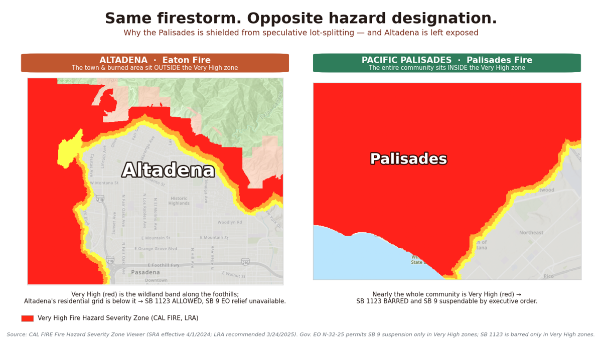
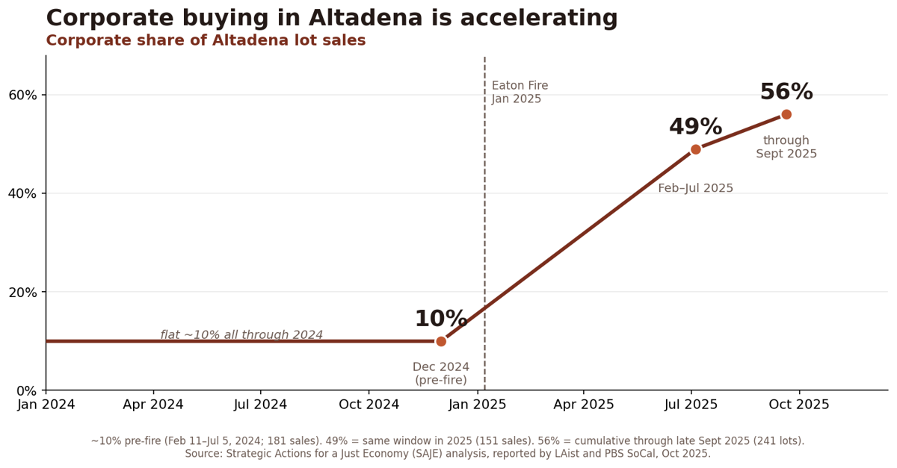
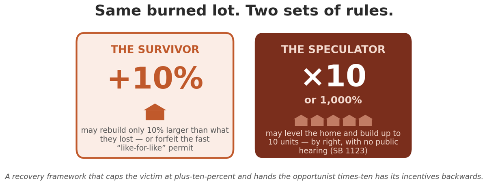

Why a narrow, time-limited pause on by-right lot-splitting is the right way to protect Altadena’s recovery from the Eaton Fire.
SB 1090 places a narrow, time-limited pause on the by-right, no-hearing pathways (SB 9 and SB 1123) that out-of-town developers are using to carve burned lots into as many as ten units each in the Altadena disaster area. SB 1090 does not restrict a homeowner’s ability to rebuild or add ADUs — and it adds a needed guardrail by barring large institutional investors (those owning 75 or more homes) from making unsolicited offers to buy up disaster-struck land. We ask the Legislature to pass it and make it effective as soon as possible. It is also sound policy:
After the same January 2025 firestorms in Altadena and the Pacific Palisades, fire-hazard zones in the burn areas received SB 9 relief by executive order — but the hazard map left most of Altadena’s burned neighborhoods out. And because SB 1123 cannot be used in high fire-hazard zones, the Palisades is shielded from it — while Altadena’s recovery area, which the map did not so designate, is left exposed. Altadena was left out of the protection and left open to the harm.

Altadenans are rebuilding by the thousands through ordinary permits. Every SB 1123 subdivision applicant we have identified is an outside corporate investor1 — not a returning resident — and the filings are clustering fast: the most active developer filed seven-plus maps in a matter of months. A recorded subdivision can never be undone, and once one developer goes down the by-right pathway, market forces pull in more. Pausing it now does not slow recovery — it protects it.

Under the Governor’s own disaster order, a survivor may rebuild only about 10% larger than the home they lost to utilize the fast track “like-for-like plus 10%” permit — while an out-of-town developer on the very same burned lot may put up as many as ten units, by right, with no hearing, and can move much faster than a resident still fighting to get funding from their insurer and the SCE claim. The victim is capped at plus-ten-percent; the opportunist is handed times-ten.

The Starter Home Revitalization Act was written to promote scattered urban infill on a few rare vacant lots, not to be heavily concentrated in fire-cleared disaster blocks. Turned loose on a burn scar, it stops modeling responsible infill and becomes the law that lets investors take advantage of a disaster. SB 1090 simply affirms that original legislative intent — keeping the SHRA focused on true urban infill so that it does not become, informally, the “Altadena Fire Sale Act.” It does not repeal the SHRA; it asks only that one devastated disaster zone not be made to absorb the region’s density goals during recovery, particularly while neighboring jurisdictions are not doing their fair share.
How SB 1123 applies to a fire-cleared disaster zone is genuinely contested, leaving these approvals open to legal challenge. SB 1090 gives the community certainty now, instead of leaving recovery hostage to whichever interpretation ultimately prevails.
The community had just completed its own blueprint — the West San Gabriel Valley Area Plan (WSGVAP), approved by the County only the month before the fire (December 2024). The WSGVAP increased the number of lots zoned for multifamily in our commercial corridors and the allowable density. Altadena still welcomes higher density multi-family housing and many burned out commercial lots are now available for this purpose. State and County ADU law still let homeowners add units without subdividing. SB 1123 was always designed for infill, not as the primary planning tool for a disaster zone — the state should give the community time to rebuild on its own principles before turning that infill pathway loose on burned blocks.
Our foothill neighborhoods sit on narrow, often single-access streets that just failed catastrophically in a deadly, fast-moving fire. Multiplying the households and cars on those same streets is a direct evacuation and life-safety hazard — and a ministerial approval carries no traffic, evacuation, or cumulative fire-safety review.
Altadena’s burned blocks were never built for this density: many are on septic rather than public sewer systems, lack sidewalks and adequate parking, and sit on undersized roads and an infrastructure grid still being rebuilt. SB 1123 assumes urban infrastructure that simply isn’t present on these foothill lots.
The Eaton Fire fell hardest on historically marginalized blocks and on longtime owners — many elderly, equity-rich but cash-poor and underinsured — and on the renters who made up much of the community’s naturally affordable housing, two-thirds of whose rent-stabilized homes burned. There are no affordability provisions in SB 9 and SB 1123. There is no evidence that any of the housing built by the out of town speculators will be affordable or prioritized for returning residents.
1. Ownership behind each SB 1123 subdivision is identified from public title and deed records, recorded sale records, and the County’s subdivision filings (RPPL records). On that basis, every SB 1123 subdivision applicant we have identified is a corporate or investor entity (LLC/LP), not a returning Altadena homeowner rebuilding their own home.